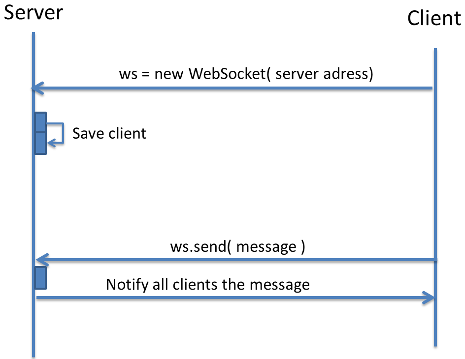

Your browser doesn't support the features required by impress.js, so you are presented with a simplified
version of this presentation.
For the best experience please use the latest Chrome, Safari or Firefox browser.
Sommaire
- L'ancêtre du webSocket : AJAX
- AJAX par l'exemple
- Définition du webSocket
- Avantages / inconvénients
- Exemples
- Fonctionnement général
- Fonctionnement détaillé : serveur & client
L'ancêtre du webSocket : AJAX
- Objet Javascript XMLHttpRequest pour communiquer client / serveur de façon asynchrone.
- Disponible depuis 2001.
- Simulation temps réel ? => appels serveur toutes les X secondes
Exemple AJAX
<form method="post" action="add.php">
<input name="a" type="number" >
<input name="b" type="number" >
<form>
function OnReady(){ $("form").submit(OnSubmit); // Abonne un callback à l'évènement "submit" du formulaire }
function OnSubmit(data){ $.ajax({ "POST",
url: "add.php", // Récupère l'url serveur
data: $(this).serialize(), // Fabrique la "query string" contenant les deux nombres
success: OnSuccess // Callback qui récupère la réponse du serveur });
return false; // Annule l'envoi classique du formulaire }
function OnSuccess(result){ $("#result").html(result); // Insère le résultat dans la balise d'id "result" }
WebSocket
Définition
Les WebSockets permettent d'établir des connexions TCP full-duplex standard directement depuis le navigateur, sans
plugin additionnel.
Elles pourront donc traverser les proxies et firewalls de manière transparente, et être établies
vers des serveurs autres que le serveur d'origine de la page, à condition bien sûr qu'ils soient compatibles
websocket.
WebSocket
Avantages-Inconvenients
- Avantages
- Développé par le W3C (Standard IETF)
- Un canal de communication bidirectionnel
- Transparent pour les firewalls, proxy, et routeurs
- Optimise le trafic réseau
- affichage temps réel
- Inconvénients
- Spécification toujours en draft
- Compatibilité des navigateurs
WebSocket
Exemple - Diffusion
En détails Diagramme de séquence

En détails Client
- ws = new WebSocket("ws://url/");
- ws.onopen = function(){}
- ws.onmessage = function(evt){}
- ws.onclose = function(){}